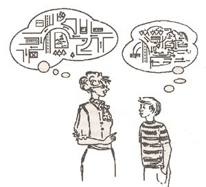
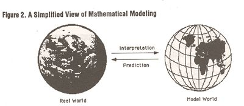
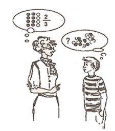
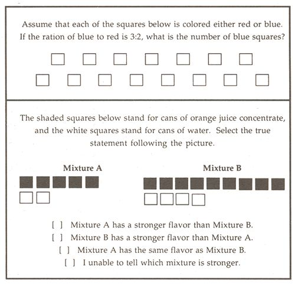
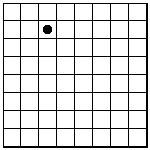
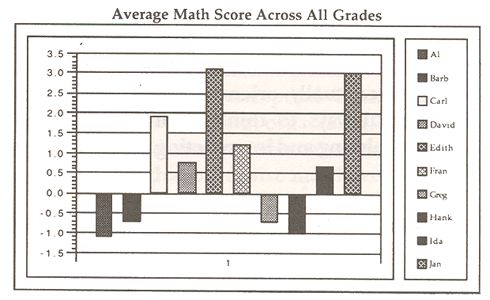
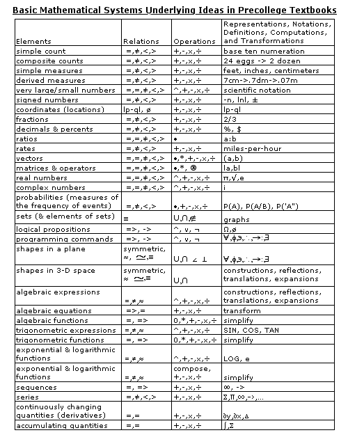
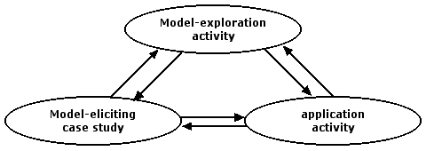
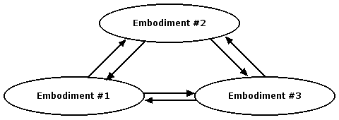

| Rational Number Project Home Page |
|
|
| Lesh, R. & Lamon, S. (1992) Assessing Authentic Mathematical Performance. In R. Lesh & S. Lamon (Eds.), Assessments of Authentic Performance in School Mathematics (pp. 17-62). Washington, DC: American Association for the Advancement of Sciences Press. |
|
|
| 2 |
Assessing
Authentic Richard Lesh and Susan J. Lamon |
CHARACTERISTICS OF AUTHENTIC MATHEMATICAL ACTIVITIES
Authentic mathematical activities are actual work samples taken from a representative collection of activities that are meaningful and important in their own right. They are not just surrogates for mathematical activities that are important in "real-life" situations.
To verify the mathematical authenticity of a collection of activities (beyond simply evaluating the authenticity of isolated items), both positively and negatively oriented criteria are relevant. That is, the activities as a whole should require students to use a representative sample of the knowledge and abilities that reflect targeted levels of competence in the field, and at the same time, the activities should avoid narrow, biased, obsolete, or instructionally counter-productive conceptions about the nature of mathematics, the nature of realistic problem-solving situations in which mathematics is useful, and the varieties of mathematical capabilities that are productive in these situations. Stated simply, authentic mathematical activities are those that involve: (i) real mathematics, (ii) realistic situations, (iii) questions or issues that might actually occur in a real-life situation, and (iv) realistic tools and resources. The most important kinds of problem-solving activities that we have in mind have the following characteristics:
- The problem solutions tend to require at least 5 to 50 minutes to construct.
- The contexts might reasonably occur in the students' everyday lives.
- The issues fit the interests and experiences of targeted students.
- The tasks encourage students to engage their personal knowledge, experience, and sense-making abilities.
- The objectives emphasize deeper and higher-order under- standings and processes in elementary mathematics.
- The solution procedures allow students to use realistic tools and resources (such as hand-held calculators, pocket computers, notebook computers, consultants, colleagues, or "how-to" manuals).
- The activities generally require more than simply answering a specific question. They involve developing a mathematical model that can be used to describe, explain, manipulate, or predict the behavior of a variety of systems that occur in every- day situations.
- The activities contribute to both learning and assessment.
- The evaluation procedures recognize and reward more than a single type and level of correct response.
CHARACTERISTICS OF PRIORITY INSTRUCTIONAL OBJECTIVES
As noted in chapter 1, the revolution in mathematics education of the past decade resulted from powerful advances in technology, cognitive psychology, mathematics, and mathematics education, together with dramatic changes in demands for a competitive work force. Behavioral psychology (based on factual and procedural rules) has given way to cognitive psychology (based on models for making sense of real-life experiences), and technology-based tools have radically expanded the kinds of situations in which mathematics is useful, while simultaneously increasing the kinds of mathematics that are useful and the kinds of people who use mathematics on a daily basis.
In response to these trends, professional and governmental organizations have reached an unprecedented, theoretically sound, and future- oriented new consensus about the foundations of mathematics in an age of information (see, for example, National Council of Teachers of Mathematics [NCTM], 1989). To address the new goals of mathematics instruction, alternative assessment programs are being demanded, created, and refined from California to Connecticut, from Chicago to Houston, and from Australia to the Netherlands.
A hallmark of most new programs is a focus on "authentic performance" rather than on simply measuring some undefined factor. In general, new programs emphasize that it is not sufficient merely to replace multiple-choice items with fill-in-the-blank counterparts. Realistic applied problems are not created by just starting with an abstract algebraic (or arithmetic, or geometric) sentence and replacing the abstract symbols with the names of real objects. Unfortunately, clarity about goals for instruction does not necessarily result in equally clear operational definitions (that is, procedures and criteria) for measuring the extent to which the goals are'\ being met. In spite of the enormous progress that has been made in I specifying curriculum and evaluation standards for school mathematics (NCTM, 1989), what is not desirable continues to be far clearer than what is. In debates among leaders in current mathematics education reform movements, a great many issues remain to be resolved about the nature of "real" mathematics, realistic problems, realistic solutions, and realistic solution processes, as well as what it means to have a deeper or higher-order understanding of an elementary mathematical idea. For example:
- According to recent reports from professional and governmental organizations, harsh criticism has been aimed at the kinds of content-by-process matrices that have been used in traditional forms of assessment and instruction. But what is missing from such matrices? And how can alternative objectives frameworks avoid these deficiencies?
- In mathematics education today, it is fashionable to be a "constructivist." But what is it that students are expected to "construct"? Similarly, twenty years ago, mathematics laboratories focused on concrete "embodiments" to help students understand foundation-level mathematical concepts and principles. But what was it that the concrete materials were supposed to embody? When "discovery learning" was emphasized, what was it that students were supposed to discover? Surely the answer in each case must include something more than simply facts and procedural rules.
- As a reaction to instruction and assessment that focuses on decontextualized abstractions, cognitive scientists often emphasize the importance of situated knowledge (Greeno, 1988, 1988b, 1987). But what is an example of a situated understanding that is not simply a specific fact or rule that fails to generalize to other situations?
- In the past, college mathematics courses for pre service elementary teachers have often been characterized by superficial treatments of advanced (college level) topics rather than deeper or higher-order treatments of elementary (K-8) topics. But what does it mean to have a deeper or higher-order under- standing of an elementary mathematical idea?
- When students are encouraged to use technology-based tools in instruction and testing, these tools tend to be "capability amplifiers" which are both conceptual and procedural in nature. For example, in realistic problem-solving situations, when students use tools such as pocket calculators (with graphing and symbol- manipulation capabilities) or notebook computers (with word processors and spreadsheets and other modeling or simulation tools), the tools often introduce new ways to think about givens, goals, and possible solution paths--in addition to providing new ways to get from givens to goals. They are much more than new ways to achieve old goals using old mathematical ideas. Furthermore, the psychological characteristics of a student-without-tools may be quite different from those of a student-with-tools. Mathematics educators have only recently begun to do extensive research on real-life problem solving involving these new breeds of students with amplified abilities. What ideas and processes should be emphasized, in teaching and testing, when students have access to powerful technology-based tools?
- The pendulum of curriculum reform tends to swing back and forth between basic skills and general problem-solving processes. While each extreme has some merit, both also have some serious shortcomings. For example, the atomization and fragmentation that tend to accompany an emphasis on discrete basic skills tend to undermine long-term learning. On the other hand, when attention focuses mainly on content-independent problem-solving processes, questions like, "Where is the mathematics?" often arise.
- To avoid such pendulum swings, it is important for teaching and testing to emphasize cognitive objectives (Greeno, 1976, 1980, 1988) that are not simply behavioral objectives (factual or procedural rules) and, that are not simply reducible to general process objectives (content-independent rules). But how can cognitive objectives be stated in a form that is both clear and precise from the point of view of assessment, and instructionally sound and meaningful from the point of view of teachers and students?
According to the theoretical approach that will be emphasized in this chapter, all of the preceding questions are variations on a single theme, and a single idea is the key to answering all of them. For example, consider the question, "What characterizes a cognitive objective that distinguishes it from a behavioral objective or a global process objective?" Our answer is a model (that is, a complete functioning system for describing, explaining, constructing, modifying, manipulating, and predicting our increasingly complex world of experiences). In other words, to answer the questions that were stated at the beginning of this chapter, a primary goal will be to clarify what it means to base the most important cognitive objectives of mathematics instruction on the construction of mathematical models.
THE NATURE OF COGNITIVE MODELS
A principle that is a cornerstone of modern cognitive science is illustrated in Figure I-that is, humans interpret experiences by mapping them to internal models. For example, what a person "sees" or "hears" in a given situation is filtered, organized, and interpreted by the cognitive models that he or she has constructed, based on past experience. Therefore, two people often interpret a single situation in quite different ways. If a person has only developed primitive models that fit a given situation, then the way this person thinks about the situation will tend to be relatively barren and distorted. In such cases, as suggested in Figure 1, the information that is available may not be noticed, and patterns that are not appropriate are likely to be perceived even though they are not objectively given.

Figure 1.
Humans Interpret Experiences By Mapping to Internal Models
In language- oriented areas of artificial intelligence re- search, frames of reference are often referred to as scripts, or frames, or as other types of representational systems, such as Schank's stories (1991). In mathematics, there has been a long history of using a variety of representation systems to describe, ex- plain, or predict experiences in real or possible worlds. These representational systems are usually referred to simply as models, because they are used to model structurally rich phenomena. No matter which of the preceding terms is used, the point is that humans generate interpretations that are influenced by both external data and internal models, and in many problem-solving/decision-making situations, the information that is relevant is based on hypothesized patterns and regularities beneath the surface, not just on calculations or deductions based on isolated pieces of data.
THE IMPORTANCE OF MODELS IN AN AGE OF INFORMATION
The principle that is illustrated in the figure above has also been described in a number of recent popular publications. For example, the best- selling book, Megatrends 2000, describes the principle in the following way:
We are drowning in information and starving for knowledge.... Without a structure, a frame of reference, the vast amount of data that comes your way each day will probably whiz right by you. (Naisbitt and Aburdene, 1990, p. 13).
In many real-life problem-solving and decision-making situations, an overwhelming amount of information is relevant, but this information often needs to be filtered, weighted, simplified, organized, or interpreted before it is useful. Sometimes needed information may not be provided, yet a decision may need to be made anyway, and made within specified time limits, budget constraints, risks, and margins for error. Models are needed to provide meaningful patterns that can be used (i) to make rapid decisions based on strategically selected cues, (ii) to fill holes or go beyond a minimum set of information, (iii) to provide explanations of how facts are related to one another, or (iv) to provide hypotheses about missing (or hidden or disguised) objects or events that may need to be actively sought out, generated, or (re)interpreted.
The essence of an age of information is that the models humans develop to think about the world also mold and shape that world. This is why, in professions ranging from business to engineering to law to music, many of the patterns and regularities that exist in the world are not simply preordained laws of nature, they are model-based products of human constructions. In fact, as the year 2000 approaches, many of the most important systems that humans must learn to understand (that is, construct, analyze, explain, manipulate, predict, and control) are businesses, communication networks, social systems, and other systems that are based on models that are themselves' constructed by humans. Furthermore, many of the most important characteristics of these systems are based on patterns and regularities beneath the surface, not just on surface-level perceptions.
Increasingly, problem solving and decision making require model construction, model refinement, and model adaptation. In fields ranging from business to engineering, and from the arts to the sciences, many of the most important goals of education involve the construction of models that provide conceptual and procedural amplifiers for interacting with our increasingly complex worlds of experience.
FACILITATING THE CONSTRUCTION OF POWERFUL MODELS
Many professional schools, such as our nation's leading business and engineering schools, furnish a wealth of examples of teaching models for thinking about the world. The value of such models is easy to recognize if we imagine a well-educated modern business manager or engineer sent back in time. Modern professionals would often appear to be unusually intelligent compared with their counterparts in earlier centuries. Their enhanced capabilities would not be the result of higher general intelligence. Instead, their enhanced capabilities would result from their use of the powerful, elementary-but-deep models and tools that our culture enables students to construct.
In fields where the most important goals of instruction are associated with the construction of models for making (and making sense of) complex systems, case studies are often used to help students construct models that have proven to possess the greatest power and utility. In business schools, for example, students often use spreadsheets or similar tools to construct models to explain trends or patterns in systems which can then be used as prototypes for making sense of other structurally related situations.
Models develop from concrete to abstract, from intuitions to formal systems, and from situated knowledge to decontextualized under- standings. To encourage their development, the situations that are used resemble the concrete embodiments which are familiar to mathematics educators from their experiences in mathematics laboratory forms of instruction (Dienes, 1957; Lesh, Post, and Behr, 1987).
THE NATURE OF "REAL" MATHEMATICS
In a series of recent reports from the National Council of Teachers of Mathematics (1989), the Mathematics Association of America (Steen, 1988), the American Association for the Advancement of Science (1989), and the Mathematical Sciences Education Board (1990, 1990a) , the mathematics education community has reached a new consensus about the nature of real mathematics (Ernest, 1991). The key characteristics that distinguish mathematics from other domains of knowledge can be summarized as follows:
Mathematics is the science and language of pattern.... As biology is a science of living organisms and physics is a science of matter and energy, so mathematics is a science of patterns.... To know mathematics is to investigate and express relationships among patterns: to discern patterns in complex and obscure contexts; to understand and transform relations among patterns; to classify, encode, and describe patterns; to read and write in the language of patterns; and to employ knowledge of patterns for various practical purposes.... Facts, formulas, and information have value only to the extent that they support effective mathematical activity. (Mathematical Sciences Education Board, 1990, p. 5)
From this perspective, a simplified view of mathematics learning and problem solving would involve the construction, refinement, or elaboration of models (Figure 2), plus (i) mappings from "real-world" situations into a "model world," (ii) transformations within the model world, and (iii) explanations or predictions from the model world back into the real world situation.
- Doing "pure" mathematics means investigating patterns for their own sake, by constructing and transforming them in structurally interesting ways, and by studying their structural properties.
- Doing "applied" mathematics means using patterns as models (or structural metaphors, or quantitative structures) to describe, explain, predict, or control other systems-with refinements, extensions, and adaptations being made to these models when necessary.

Figure 2.
A Simplified View of Mathematical Modeling
Of course, this description of mathematical problem solving is too simplistic for many purposes. For example, when humans use a given mathematical model to describe/ explain/ predict/ control a given learning or problem-solving situation, their models tend to be partly internal and partly external. Also, several unstable and possibly conflicting models are often used in sequence and/or in parallel, with each model emphasizing or de-emphasizing somewhat different aspects of the situation or of the under- lying abstract system. Furthermore, a given (abstract) model tends to be embedded simultaneously within a variety of interacting notation systems (for example, involving written symbols, spoken language, manipulatable concrete models, static pictures or diagrams, or real-life systems, prototypes, or structural metaphors) each of which again emphasizes or de-emphasizes different aspects to the modeled situation. Therefore, solutions to realistic problems often involve (i) parallel and interactive uses of several distinct notation systems and/ or problem interpretations, (ii) partial mappings between components of the modeled situation and corresponding components of the model and/ or notation system, and (iii) constructing, adapting, extending, integrating, differentiating, and/ or refining of a series of models that gradually become more complete, accurate, and sophisticated. However, for the purposes of this chapter, the simplified portrayal of mathematical modeling is sufficient. The essential points are the following:
- Many of the most important mathematical "objects" that students are expected to study are not simply isolated factual and procedural rules or general problem-solving processes. They are models (or patterns, or structural metaphors) that are useful for building and making sense of real and possible worlds.
- Mathematical models are complete functioning systems, which consist of: (i) elements (for example, quantities, ratios of quantities, shapes, coordinates), (ii) relationships among elements within the system, (iii) operations or transformations on elements in the system, and (iv) patterns that govern the behavior of the relations, operations, and transformations.
AN EXAMPLE OF A MATHEMATICAL MODEL IN ELEMENTARY MATHEMATICS
Cartesian coordinate systems are examples of elementary mathematical models that provide powerful ways to describe (or think about) real or possible worlds. That is, by imposing rectangular coordinate systems on the world, it is possible to use equations and numbers to describe whole new classes of situations, locations, or relationships.
An important point to notice about elementary-but-deep models is that it often takes the genius of someone like Rene Descartes to introduce the models on which the conceptual system is based. Yet today, it is relatively easy to help average-ability middle schoolers construct these powerful models. Furthermore, if these middle schoolers could be sent back in time to a period prior to the birth of Rene Descartes, they would often appear to be geniuses, because, in a wide variety of structurally complex situations, they would be able to generate descriptions, explanations, and predictions that would seem miraculous to people in ancient civilizations.
Some other important points to notice about Cartesian coordinate systems include the following:
- Cartesian coordinate systems are capability amplifiers that function in much the same way as pocket calculators. But while pocket calculators tend to emphasize procedural capabilities, Cartesian coordinates tend to emphasize conceptual amplifiers. Still, both are capability amplifiers that involve conceptual and procedural components.
- Even though Cartesian coordinate systems are often represented using diagrams that look something like game boards for checkers, mathematicians often work with Cartesian systems without using such diagrams; the diagrams are only embodiments in which the abstract system is embedded. The model is the underlying abstract system itself.
- Even though Cartesian coordinate systems are linked to a variety of rules for comparing, ordering, organizing, combining, and transforming data, their primary function is not really data processing. Their primary function is to provide a description or interpretation for making sense of underlying patterns and regularities, and for expressing them in a form that is generative and easily manipulatable.
- Even though Cartesian coordinate systems are obviously human constructions that are not inherent parts of nature, educated citizens in the 1990s often have difficulty remembering what the world was like before these powerful conceptual systems were such familiar parts of our cultural heritage. In fact, today, many people even think it's obvious to view the world within a four-dimensional framework in which time is the fourth dimension. In science and mathematics, things that are "obvious" have evolved dramatically from one era to another as a function of the conceptual models that we use to describe and explain our experiences.
AN EXAMPLE OF A MATHEMATICAL MODEL IN ELEMENTARY ARITHMETIC
In elementary arithmetic, there are many elementary-but-deep models of a type similar to Cartesian coordinate systems. While the elements in Cartesian coordinate systems are coordinates of the form (n, m), the elements in other mathematical models may be mathematical entities ranging from signed numbers, to ratios, to proportions, to functions, to vectors, to shapes, to sequences. Some of the models that underlie arithmetic become so familiar to citizens of modern societies that they seem to be part of nature. However, the names of our number systems are strong reminders of the historic obstacles that had to be overcome before the underlying models associated with them gained acceptability. For example:
- In the beginning, there were natural numbers (1,2,3,4,...). The invention of zero occurred much later. Negative numbers were looked upon negatively, and fractions were considered to be unacceptable in polite society.
- Later in history, as fractions and negatives began to seem sensible (or rational), they were described as being rational numbers, as opposed to irrational numbers (like "2 and x) that just didn't make any sense to most people.
- As more time passed, even irrational numbers were included in the set of Real numbers, even though imaginary numbers (such as i or ÷ -1) continued to be treated as unreal.
- Eventually, complex numbers proved to be very useful to describe important evenly in nature, even though they included numbers that had previously been called imaginary.
In the history of mathematics, it took centuries to construct the notation systems and underlying models that citizens of twentieth century societies take for granted. Furthermore, before these models were constructed, earlier civilizations were often severely limited in the kinds of economic, social, technological, or scientific systems that they were able to create, and they were often similarly hampered in their attempts to make sense of many kinds of patterns and regularities that occurred in their worlds or experience.
Figure 3 suggests that many students in our schools today have limitations similar to those that were experienced by citizens of ancient cultures because what they see or hear is filtered, organized, and interpreted by the cognitive models that they have constructed, and because their primitive models are only able to produce barren and distorted interpretations of their experiences. For example, extensive research on the development of students' knowledge reveals that a large share of the American population is often extremely restricted in their reasoning abilities if they must make judgments about systems that involve more than directly observable counts and measures (Lesh, Behr, and Post, 1987).

Figure 3.
Humans Interpret Underlying Patterns & Regularities By Mapping To
Mathematical
Even for middle school teachers whose relevant computational abilities tend to be flawless, reasoning abilities are often extremely restricted if the emphasis shifts from systems whose elements are directly perceivable quantities to systems whose elements involve higher-order entities such as ratios, rates, or functions (where the elements involve relationships among several quantities). For example, consider the tasks shown in Figure 4, which are typical of those for which success rates have been consistently below 50 percent for large samples of 8th graders or adults, including middle school teachers (see, for example, Lesh, Post, and Behr 1988; Post, Behr, Lesh, and Harel, 1991).

Many more examples could
be given that emphasize conceptual rather than procedural proficiency, and
similar results could be cited based on more realistic ethnographic observations
in real-life settings (see, for example, Saxe, 1991; Lave, 1988) or on clinical
interviews involving concrete materials (Lamon, 1990; Lesh, Landau, and
Hamilton, 1983). The results of such studies reveal how weak the conceptual
foundations are underlying many students' procedural facility. It is important
to note that some students who perform poorly on the conceptually oriented
tasks may be highly capable individuals. But, like intelligent citizens
of early cultures, they have simply never had the opportunity or the need
to construct mathematical models whose elements involve anything more sophisticated
than simple counts and measures.
Unfairness on tests is easy to recognize if some students have access
to powerful electronic tools that are unavailable to other students. But
unfairness of another sort occurs when some students go into tests equipped
with powerful conceptual models that other students have never encountered.
The situation is further exacerbated when deficiencies with respect to
such capability amplifiers are portrayed as differences in native abilities.
DEEPER AND HIGHER-ORDER UNDERSTANDINGS OF A CONCEPTUAL MODEL To clarify what it means to have a deeper or higher-order under- standing
of a mathematical model, it is useful to return to fields such as business
and engineering where there is a long history of treating acquisition
of models as a key goal of instruction. In such fields, it is common for
the most powerful models to be accompanied by (i) technical language to
facilitate communication about basic models and the systems they describe,
(ii) specialized notation systems to expedite the construction and manipulation
of particularly important models and systems, (iii) diagrams or descriptions
that focus attention on holistic characteristics of the system-as- a-whole,
and (iv) formulas, computation tools, spreadsheet programs, or other simulation
and modeling tools that can be used to generate hypotheses, descriptions,
or predictions in typical decision-making situations. However, it is clear
that understanding the underlying models involves far more than simply
being able to remember and execute rules within the notation systems,
diagrams, rules, and tools. In fact, in realistic settings, when the purpose
is to get from specifically stated givens to clearly identified goals,
the relatively simple job of executing the relevant procedures is regarded
as a low-level clerical task; if "data crunching" is necessary, powerful
technology-based tools tend to be used. Therefore, in our nation's leading
schools of business and engineering, expert job interviewers whose goal
is to hire individuals capable of higher-level skills, including on-the-job
problem solving and decision making, tend to focus on questions that emphasize
the following types of deeper and higher-order understandings:
- Students are asked to interpret standard and nonstandard situations using traditional models that have the greatest power and usefulness.
- Students are asked to construct new models, or sort out and integrate existing models, to determine (i) which kind of information should be gathered, (ii) how the data should be interpreted, quantified, and analyzed, and (iii) whether trial results are sensible and useful.
- Students are asked to analyze or critique competing interpretations of a given situation, for example, by detecting significant model-reality mismatches using standard models, or by evaluating risks, benefits, and underlying assumptions associated with alternative models and suggesting appropriate modifications or extensions to the model.
- Students are required to perform tasks in which fact/skill-level understandings and abilities must be embedded within flexible, adaptable, and well-integrated systems of knowledge rather than treating lower-level definitions, facts, and rules as rigid and isolated pieces of dogma.
In such situations, it is usually easy to recognize that (i) every model de-emphasizes and simplifies some aspects of reality in order to emphasize and clarify other aspects, and (ii) every model is based on some assumptions that do not completely fit the realities in the problem situation. Therefore, when models are important cognitive objectives of instruction, one of the main goals of assessment is to probe the nature of the interpreting models that individual students have constructed to determine their accuracy, complexity, complete- ness, flexibility, and stability when they are used to generate descriptions, explanations, and predictions in a variety of problem solving settings and for a variety of purposes under differing conditions. For example, when explanations are generated, the quality of responses depends on the following kinds of criteria: (i) How much information was noticed? (ii) How well (and how flexibly) was the perceived information organized? (iii) How sophisticated, or complex, or rich were the relationships that were noticed? (iv) Were observations and subjective relationships perceived that were not objectively given?
To assess the types of models that individual students have constructed, and to assess the stability of these models in a variety of situations and conditions, assessment must go beyond testing the amount of information that a student notices in a given situation; it must also assess the nature of the patterns of information that are noticed and identify valid and invalid assumptions that are made about underlying regularities. Similarly, the goal of instruction is not simply to get students to master more factual and procedural rules, but rather to help them construct powerful models that provide conceptual/ procedural amplifiers in priority types of problem-solving and decision-making situations.
DEEPER AND HIGHER ORDER UNDERSTANDINGS IN ELEMENTARY MATHEMATICS
Exploring similarities between the kind of models that occur in elementary mathematics and the kind that are emphasized in professional schools (or in other disciplines) has helped to identify the following six types of deeper and higher-order understandings:
- Students should use models to interpret real-life situations. That is, they should go beyond school math problems (in which the givens, goals, and available solution steps are clearly specified) to also deal with real-life problems in which models must be constructed to generate descriptions, explanations, and predictions.
- Students should think about underlying models. Students should go beyond thinking with a given mathematical model to also think about the model as a complete functioning system, for example, by investigating the accuracy, precision, and goodness of fit of the descriptions that are generated for given problem-solving situations, and by investigating structural properties of the model (or system as a whole).
- Students should explore similarities and differences among alternative representation systems associated with a given model. Because most mathematical models can be embodied within a variety of alternative notation systems (involving spoken language, written symbols, static graphics, manipulatable concrete materials, or real-life prototype experiences), students should go beyond executing factual and procedural rules within a given notation system and should also investigate (i) translations from one notation system to another, and (ii) strengths and weaknesses associated with alternative embodiments.
- Students should think about thinking. That is, they should think about the processes that are needed to construct and refine an adequate model, and plan, monitor, and assess the construction process.
- Students should think about systems of knowledge. They should go beyond learning lists of isolated facts and rules to also develop well organized and clearly differentiated systems of knowledge. In particular, they should go beyond constructing isolated models to also develop coherent systems of models, for example, by investigating similarities and differences among alternative models in a variety of problem-solving situations.
- Students should think about the nature of mathematics and assess their own personal capabilities. Beyond constructing and investigating mathematical models, students should also form accurate and productive beliefs about (i) the nature of mathematical models (for example, concerning their power and limitations in real- life problem-solving situations), and (ii) the nature of their own personal problem-solving and model-constructing capabilities.
When cognitive objectives of instruction include the construction and modification of models for describing, explaining, constructing, modifying, manipulating, and predicting patterns and regularities that govern the behavior of complex systems, the six categories described above represent distinct types of deeper and higher-order understandings associated with models and modeling. Furthermore, as Table 1 shows, they also correspond nearly one-to-one with the most interesting new categories of objectives emphasized in the Curriculum and Evaluation Standards for School Mathematics published by the National Council of Teachers of Mathematics (NCTM, 1989). The table also shows how the seven categories of NCTM objectives correspond with model-based process objectives that we have identified in past publications (Lesh, 1990).
| Table 1. Relationships Between NCTM Standards and Model-Based Knowledge and Abilities |
|
|
|
New
Categories of
NCTM Objectives |
Higher-Order
Understandings
of Cognitive Objectives |
Model-Based
Process Objectives |
||
|
mathematics
as
problem solving |
<--> |
think
about
"real life" situations |
<--> |
analyze
& interpret
problem situations |
|
number
sense
& estimation |
<--> |
|
||
|
mathematical
structure |
<--> |
think
about models
|
<--> |
generalize
& extend
overall solutions |
|
Mathematics
as
communication |
<--> |
think
about
representation systems |
<--> |
translate
within and
between modes of representation |
|
Mathematics
as
reasoning |
<--> |
think
about thinking
|
<--> |
plan
& execute
solution steps |
|
|
|
<--> |
monitor
& assess
intermediate & final results |
|
|
mathematics
as
connections |
<--> |
think
a bout
systems of models |
<--> |
identify
similarities
and differences |
|
|
<--> |
think
about
real world applications |
<--> |
translate
and interpret |
|
mathematical
disposition |
<--> |
think
about mathematics
and personal capabilities |
|
|
|
Table 1. Relationships Between NCTM Standards and Model-Based Knowledge and Abilities |
||||
ACTIVITIES THAT ENCOURAGE THE DEVELOPMENT OF MATHEMATICAL MODELS
This section contains several examples of model-eliciting activities in real-life situations (Problems 1-4). Each example has been used with middle school students through adults, with problem solvers working either individually or in three-person teams. Each activity takes at least 30 to 60 minute to complete. The solutions involve constructing interpretations that are based on ratios or proportional reasoning (A/B=C/D). No artificial restrictions are placed on time, tools, or resources; in particular, calculators and computers are available. The goal is not simply to produce answers to specific questions. Instead, the responses involve producing a description, or an explanation, or a prediction which requires students to document explicitly how they are thinking about the situations. Then the descriptions and explanations that students construct are used as models to interpret other structurally similar situations. In other words, the problems are more like case studies in professional schools than they are like traditional kinds of textbook word problems.
Problem 1
THE BANK ROBBERY PROBLEM
Students were shown the following newspaper article.
Two gunmen held up the Second National Bank, around ten thirty this morning One was a middle-aged man in a grey suit, who pointed a large handgun at a frightened teller and demanded cash Another man pulled a shotgun out of a laundry sack and held it on the customers, while tellers filled the sack with money, most of it in small bills The two perpetrators escaped before police arrived. ."It was awful!"' exclaimed Louise DiChello, head teller for Second National "'I pushed the alarm button. Where are the police when you need them?"' Responding to charges of slow response to emergency calls, Police Commissioner Tyrone Campbell claimed that the bank's silent alarm did not go off during the robbery. "'If the hardware fails, the police get the blame."' Bank President George Bromley stated that, according to his accounting, the amount stolen was close to a million dollars. "'The bank's insurance will cover the loss. But it’s sad to see thieves and thugs get away with crimes like this!"' Anyone having information about today's robbery should call the CrimeStoppers HotLine 1-800-STOP IT
Problem A: Could the events really have happened as told in the newspaper story? Could two robbers escape with a million dollars in small bills in a laundry sack as reported? - - - Analyze the situation. What suggestions would you offer for solving this crime? Write a note to the detectives on the case explaining your reasoning. Give details so they will understand
Problem B: Imagine you are a detective investigating the crime. An employee of the bank tells you that Bank President Bromley has been suffering financial setbacks recently. She wonders if the robbery was fake. You wonder about the large sum reported stolen, and do some calculations to deduce whether it would have been physically possible to carry out a million dollars in small bills as described. You figure an American dollar bill weights about 1 gram. If 50% of the stolen money was $1 bills, 25% was $5 bills and 25% was $10 bills, estimate how much the loot would have weighed Would it have been possible for 2 robbers to carry this amount out of the bank?
Problem 2
THE CD TOSSING GAME
|
For a popular carnival game, a player tosses a coin onto a game board that looks like a checkerboard. If the coin touches a line on the game board the player loses. If not, the player wins! Players get three throws for a dollar! You've been asked to design a similar game for a fund raising carnival at your school For prizes, a local record store will sell up to 100 CD's to your class for $5 per disc You can choose any discs you want just as long as the regular price of the CD is less than $20 To make the game more fun, you've decided to let players throw old scratched CDs rather than coins Two sizes of CD can be used (3 inch disc. and 5 inch discs) So the cost of three throws can depend on which size a player chooses to throw.
|
 |
| All plans for games must be approved by the carnival planning committee You want to make as big of a profit as possible But, if too few people win, people won't want to play the game Write a plan to submit to the carnival planning committee that includes details about the size of the game board, the cost of throws, the chances of winning, and an estimate of the expected profits. | |
Problem 3
THE SEARS CATALOG PROBLEM
Fred Finley began teaching here at the high school 10 years ago. He and his new bride rented an apartment at 318 Main Street for $315 per month, and he also bought a new VW Rabbit for $6,200. His starting salary was $16,300 per year. This year, Fred's sister, Pam, also began teaching at the high school Pam, too, just got married. In fact, she rented the very same apartment as her brother did 10 years ago, only now the rent is $610 per month. She also bought a new VW Rabbit that sold for $13,700. Using this information, and these (see items below) newspapers and catalogs, write a letter to the School Board recommending (and justifying) how much you think Pam should get paid.
note: Students were given (i) a calculator; (ii) two Sears catalogs -- one current, and the other from 10 years ago, and (iii) two newspapers - one current, and the other from 10 years ago.
|
Problem 4 DON'T DRINK &. DRIVE HOTLINE To prepare for the problem, show students the following newspaper article. |
||||||||||||||||||||||||||||||||||||||||||||||||||||||
|
|
||||||||||||||||||||||||||||||||||||||||||||||||||||||
|
Drunk Driving Laws for the New Year The new drunk driving law will go into effect at 12 midnight January 1, meaning New Year's Eve celebrators should have designated non-drinking drivers in their group. A driver who is found to have a blood alcohol level of 0.05%, or more will be subject to a $500 fine and will risk prosecution and a possible prison term New Year's Eve party-goers should be aware of a few facts, A 12 ounce can of beer, a 5 ounce glass of wine and a 1 ounce glass of hard liquor should each be counted as one drink. The effect of one drink on a heavy person is much more than the effect of one drink on a light person. Experts point out that once a person has stopped drinking, the blood alcohol level drops about 0.015% every hour. For example, a 140-pound person with a blood alcohol level of 0.10% would have a blood alcohol level of 0.085% after one hour and a blood alcohol level of 0.070% after two hours. While a person can legally drive at blood alcohol levels of 0.04% or lower, experts emphasize that impairment is still possible, and the best policy is to not drink and drive Most restaurants and banquet halls are offering free soft drinks to designated drivers and free taxi rides home upon request. For partygoers who prefer to avoid driving or riding with others, overnight packages are available at most local hotels. |
||||||||||||||||||||||||||||||||||||||||||||||||||||||
|
||||||||||||||||||||||||||||||||||||||||||||||||||||||
|
Problem: Your community has decided to start the Don't Drink &. Drive Hotline. As part of this group effort your class has been asked to develop a method so that hotline workers can quickly estimate a caller's blood alcohol level. Develop useful tools (for example, tables, graphs, computer software, etc) that will be helpful to hotline workers and describe how to use your tools/method for scenarios like those below. Test Your Materials: After developing your tools/method for estimating a caller's blood alcohol level, test your materials by role-playing a telephone call. Have someone (a friend, a classmate, a parent, etc.) read one of the scenarios below and pretend to call you. You should pretend to be the hotline employee who answers the call. Ask questions to gather the information that you need and use your quick-and-easy-to-use method to estimate the blood alcohol level of the caller. SCENARIO I. Jake ate lunch between 12:00 and 1:00 and had two glasses of beer. He weighs 240 pounds It is now 3:00 Pretend that you are Jake and are calling the DDD Hotline SCENARIO II. Shortly after arriving at a friend's house at 6:00, Regina had a cocktail Dinner was served from 7:00 to 9:00 With dinner she drank two glasses of red wine Regina weighs 112 pounds II is 11:00 Pretend that you are Regina and are calling the DDD Hotline. |
||||||||||||||||||||||||||||||||||||||||||||||||||||||
To create effective model-eliciting activities, one of the main goals is to create problems that encourage (and do not discourage) sense making, based on students' personal knowledge and experience. A second rule is to focus on problems that encourage the construction and investigation of elementary mathematical models that are likely to have the greatest power and utility (short-term and long-term) for the students who are involved., third rule is to create tasks in which students go beyond (unconscious thinking with the models to also (consciously) think about them, for example, by constructing them, by modifying and adapting them for variety of purposes, and by investigating their structural properties in variety of meaningful situations. A fourth rule is to ensure that an appropriate range of problem types, response types, and interpretation possibilities are represented, and, in particular, to ensure that realistic types of givens, goals, tools, settings, or procedures are not neglected. A fifth rule to avoid problems that have only a single level and/or type of correct response.
The last rule is especially important because, in general, the one way to create problems with only a single correct answer is to eliminate the phases of problem solving that focus on processes such as problem interpretation, or response justification, or the testing and refinement of hypothesis (about underlying patterns and regularities. In other words, to eliminate the possibility of more than a single correct answer, it is usually necessary, eliminate exactly those phases of problem solving in which attention focused on the underlying mathematical structure of the problem and on deeper and higher-order mathematical understandings of the mathematical structure.
To create activities that encourage students to construct significant mathematical models, authors should ask themselves, "What kinds situations create the need for people to create models, whether they a working in mathematics, in science, in business, or in everyday life?" Answers to this question include the following:
- Models are needed when it is necessary to make predictions based on underlying patterns or regularities, for example, to anticipate real events, to reconstruct past events, or to simulate inaccessible events.
- Models are needed when constructions or explanations are requested explicitly, for example, for describing hypothesized patterns and regularities, or for describing decision-making situations in which too much or not enough information is available.
- Models are needed when it is necessary to justify or explain decisions, for example, by describing underlying assumptions, conditions, and alternatives.
- Models are needed to resolve interpretation mismatches, for example, between hypotheses and reality or between two competing interpretations, predictions, or explanations of a given situation.
- Models are needed when it is necessary to recreate and critically analyze conclusions or descriptions generated by others.
In general, to develop effective model-eliciting activities, one of the major goals is to create meaningful contexts in which students will recognize the need for a model. Then model construction tends to follow naturally.
RULES OF THUMB FOR WRITING EFFECTIVE MODEL-ELICITING ACTIVITIES
Twenty years ago, when authors of this chapter first began to conduct research on problems that people today refer to as authentic performance activities, we usually cited reality as our primary criterion for distinguishing "good" problems from "bad" (see, for example, Bell, Fuson, and Lesh, 1976). We still consider realism to be a praiseworthy goal, though realism is a principle that is not so simple and straightforward to implement. To see why, consider the following:
- Problems that are real for authors or teachers often have little to do with a middle schooler's reality. For example, a teenager's main interests often center around fanciful situations, or around "what if' distortions of the real world, rather than around reality in the more traditional sense.
- A topic that is timely (or "hip") one year often is treated as old fashioned the next, and one student's reality is often quite different from another's. For example, a rural middle-class white male's reality tends to be considerably different from that of an inner city, lower-SES black female.
- Videodisc portrayals of real-life situations sometimes encourage students to suspend their reality judgments in the same way that they do when they watch movies and television. Explorations with concrete materials (such as Cuisenaire rods) frequently turn out to be as abstract as if they had been done with written symbols.
- Computer-based explorations sometimes become very real to students, even though they often make no reference at all to objects or events in students' everyday lives.
- Problems that focus on skills for low-level employment often turn off the very students who were expected to consider them relevant. On the other hand, pure mathematics activities (for example, involving pattern exploration in number theory) often give students a realistic view of mathematics as it really is for a research mathematician, even though the experiences might seem far removed from the students' everyday life.
Over the years, another problem attribute proved to be even more fundamental than "reality" for describing of the kind of problems that v want to emphasize. That is, the real purpose of emphasizing realist problems was to encourage students to construct and investigate powerful and useful mathematical ideas (that is, models and principles associate with models) based on extensions, adaptations, or refinements of their own personal knowledge and experience. Therefore, we refer to our more effective problems as model-eliciting activities (Lesh and Kaput, 1988) because their solutions involve constructing, transforming, investigating, modify in integrating, differentiating, or using mathematical models or patterns. For example, typical solutions to the Sears Catalog Problem, described in the preceding section, illustrate the kinds of mathematical ideas students invent in model-eliciting situations.
When we first began to gather information about students' solutions to the Sears Catalog Problem, the main model (or reasoning pattern that we expected students to construct had to do with proportional reasoning of the form A/B=C/D. In fact, most of the students we observed did indeed end up thinking about the problem using some type of proportion; reasoning model. But a high percentage went far beyond an interpretation of the problem based on simple ratios, proportions, or linear equations. For example, to find a useful way to think about the situation, students often invented ideas such as weighted averages, trends, interpolation, extrapolation, data sampling, margins of error, or others that their teachers thought were too sophisticated for youngsters to learn.
In their solutions to the Sears Catalog Problem, students also invented surprisingly sophisticated ways to deal with the following kinds of issues:
- Data sampling. For example, how many, and which, items should be considered? Which should be ignored? What should be done about unusual cases (such as the fact that the cost of pocket calculators decreased, while the cost of most other items increased)? How should the data be classified or organized? What kinds of patterns and relationships (for example, additive, multiplicative, exponential) should be hypothesized?
- The quantification of qualitative information. For example, what weights should be assigned to various kinds of information? How can information be merged that is based on different kinds of quantities or units of measure?
- Conditional results. For example, because of equity issues, or risks and benefits associated with alternative answers, final decisions about salaries should depend on additional information about conditions in the past and perhaps on assumptions pertaining to the present and future.
In fact, we found that, when model-eliciting activities are used to encourage students to make sense of problem-solving and decision-making situations based on their own personal knowledge and experiences, students who had been labeled average or below average often emerged as extraordinarily talented, because they routinely invented (or significantly extended, modified, or refined) mathematical models that went far beyond those that their teachers believed they could be taught. (Lesh and Akerstrom, 1982; Lesh and Zawojewski, 1987)
AN EXAMPLE: TEACHERS SOLUTION OF A MODEL-ELICITING PROBLEM
Many K-8 teachers have not had much experience working on project-sized, model-eliciting problems. Therefore, before they try to create such problems for their own students, and before they try to assess students' responses to such problems, it is useful for them to participate (as students) in a few problems that were explicitly designed to fit their own every decision-making activities.
The Math Placement Problem (Problems 5A-5D) was designed especially to help teachers gain firsthand experience with realistic model eliciting problems. It was also designed to focus on two questions that special concerns for many teachers: (i) What understandings and abilities should be emphasized when students are allowed to use technology-based tools? (ii) What understandings and abilities should be emphasized when students are allowed to work in teams?
|
Problem 5A THE MATH PLACEMENT PROBLEM
|
||||||||||||||||||||||||||||||||||||||||||||||||||||||||||||||||||||||||||||||||||||||||||||||||||||||||||||||||||||||||||||||||||||||||||||||||||||||||||||||
|
Problem A: Imagine that you are the teacher at a middle school that has developed its own performance assessment program. The tests are not multiple-choice, and students' achievement scores reflect not only test performance but also teachers' classroom observations and evaluations of students' work portfolios. You've been given the following assignment. Your school offers three sections of 9th grade mathematics classes. Your assignment is to work with the school counselor and another teacher to develop a policy for assigning students to one of these three sections. Write a letter to the principal describing the policy that you recommend for assigning students to the available courses. Then, demonstrate how your policy should be applied to the students whose test scores are shown in the following data sheet. |
||||||||||||||||||||||||||||||||||||||||||||||||||||||||||||||||||||||||||||||||||||||||||||||||||||||||||||||||||||||||||||||||||||||||||||||||||||||||||||||
|
|
||||||||||||||||||||||||||||||||||||||||||||||||||||||||||||||||||||||||||||||||||||||||||||||||||||||||||||||||||||||||||||||||||||||||||||||||||||||||||||||
|
Math and Reading Achievement (Grade Level Equivalent Scores) |
||||||||||||||||||||||||||||||||||||||||||||||||||||||||||||||||||||||||||||||||||||||||||||||||||||||||||||||||||||||||||||||||||||||||||||||||||||||||||||||
|
||||||||||||||||||||||||||||||||||||||||||||||||||||||||||||||||||||||||||||||||||||||||||||||||||||||||||||||||||||||||||||||||||||||||||||||||||||||||||||||
|
COMMENTS FROM PREVIOUS TEACHERS |
||||||||||||||||||||||||||||||||||||||||||||||||||||||||||||||||||||||||||||||||||||||||||||||||||||||||||||||||||||||||||||||||||||||||||||||||||||||||||||||
|
||||||||||||||||||||||||||||||||||||||||||||||||||||||||||||||||||||||||||||||||||||||||||||||||||||||||||||||||||||||||||||||||||||||||||||||||||||||||||||||
|
Problem 5B Problem B: After writing a trial policy for sorting students into your school's three levels of mathematics courses, the other teachers you've been working with got a new idea. They transformed the students' scores as shown below. Look at what they did. Then rewrite your policy in any way that you believe is appropriate to take into account the new information. Math and Reading Scores Compared to Actual Grade Level |
||||||||||||||||||||||||||||||||||||||||||||||||||||||||||||||||||||||||||||||||||||||||||||||||||||||||||||||||||||||||||||||||||||||||||||||||||||||||||||||
|
||||||||||||||||||||||||||||||||||||||||||||||||||||||||||||||||||||||||||||||||||||||||||||||||||||||||||||||||||||||||||||||||||||||||||||||||||||||||||||||
|
Problem 5C Problem C: The school counselor you've been working with has found some other ways to simplify (and graph) the data you were given. For example, an average score was calculated across all six grades; and the following graph was drawn, Again, modify your policy in any way that you believe is appropriate to take into account all of the information that is now available. |
||||||||||||||||||||||||||||||||||||||||||||||||||||||||||||||||||||||||||||||||||||||||||||||||||||||||||||||||||||||||||||||||||||||||||||||||||||||||||||||
|
Math Scores (Only) For All Grade Levels |
||||||||||||||||||||||||||||||||||||||||||||||||||||||||||||||||||||||||||||||||||||||||||||||||||||||||||||||||||||||||||||||||||||||||||||||||||||||||||||||
|
||||||||||||||||||||||||||||||||||||||||||||||||||||||||||||||||||||||||||||||||||||||||||||||||||||||||||||||||||||||||||||||||||||||||||||||||||||||||||||||
|
 |
||||||||||||||||||||||||||||||||||||||||||||||||||||||||||||||||||||||||||||||||||||||||||||||||||||||||||||||||||||||||||||||||||||||||||||||||||||||||||||||
|
Problem 5D Problem D: While playing around with the graphing capabilities of the spreadsheet you've been using to graph the data shown in problem 3, the computer constructed the following graph. Does it show anything new that you should consider? Again, modify your policy in any way that you believe is appropriate to take into account all of the information that is now available. |
||||||||||||||||||||||||||||||||||||||||||||||||||||||||||||||||||||||||||||||||||||||||||||||||||||||||||||||||||||||||||||||||||||||||||||||||||||||||||||||
 |
||||||||||||||||||||||||||||||||||||||||||||||||||||||||||||||||||||||||||||||||||||||||||||||||||||||||||||||||||||||||||||||||||||||||||||||||||||||||||||||
|
One Solution to the Math Placement Problem One group of teachers used the available analyses and graphs to support the recommendation that the school should abandon its previous the policy of sorting students into low, middle, and high ability groups Instead, the recommendation \vas made that three equivalent math groups should be created, with "difficult" students being distributed equally in the three sections. To help teachers recognize the strengths and needs of each student, the teachers also recommended that executive summaries of the preceding graphs and analyses should be made available to teachers. |
||||||||||||||||||||||||||||||||||||||||||||||||||||||||||||||||||||||||||||||||||||||||||||||||||||||||||||||||||||||||||||||||||||||||||||||||||||||||||||||
Because solutions to the Math Placement Problem involve using powerful computer-based tools, problem solvers no longer needed to be preoccupied with routine calculation and graphing skills. Instead, they are able to focus on conceptually oriented activities such as constructing appropriate and useful ways to think about the information that was available, or such as analyzing and interpreting results produced by computers or colleagues.
An important attribute of the Math Placement Problem is that the givens involve more than just pieces of data. They also involve patterns of data; and, they involve more than a single type of qualitative or quantitative information. Furthermore, the goal involves more than simply producing a specific answer to a particular question. It involves creating a policy that can be applied to a whole class of specific cases. In fact, appropriate responses involve more that just making decisions (or giving answers). They also involve justifying and explaining decisions (or answers); they involve constructions in which students explicitly describe the data, patterns, and relationships that their interpretations of the problem take into account. In other words, students use the computer-based tools to construct responses in much the same way that geometry tools are used to construct geometric objects. In this way, the quality of responses depends on constructions themselves as well as on decisions based on the constructed information.
Because the Math Placement Problem involved a familiar situation for the teachers who worked on it, they noticed that many of their own most important decision-making activities involved interactions with members of their groups and with technological tools (for example, spread- sheets). They also noticed that people who were good at dealing with the problem situation were not necessarily those who were best at textbook word problems because different kinds of knowledge, abilities, skills, and personalities were often needed. For example, in the Math Placement Problem, when they worked together in three-person teams, and when they used computer-based tools, different people generally assumed different roles (information gatherer, manager/coordinator, data cruncher, reality checker), which often shifted throughout the problem-solving process. Therefore, many of the most important abilities that were emphasized involved coordinating and communicating plans, processes, and results among people playing different roles.
When problem solving focuses on the development of models for thinking about realistic decision-making issues (rather than on linking together factual and procedural rules for getting from givens to goals), technology-based tools generally make it easier for students to focus on higher-order mathematical activities by minimizing distractions associated with computational drudgery. Technology-based tools not only change computational and procedural demands associated with problem- activities, they also change the conceptual demands, for exam creating new possibilities for selecting, organizing, and interpreting information and by forcing students to externalize (and be explicit interpretation frameworks that otherwise may have remained internal.
AN EXAMPLE: TEACHERS' IMPROVED VERSIONS OF EXISTING PROBLEMS
To help teachers create realistic problems that focus on authentic mathematical modeling activities, it is useful to begin by analyzing trying to improve problems from exemplary resources such as the projects that are described throughout this book. For example, Problem 1 taken from the NCTM's 1989 Curriculum and Evaluation Standards of Mathematics. A transcript of one teacher's report and revised problem follows (Note: The woman submitting this report was actually a softball player.)
|
Problem 6A The Original Softball Problem The table gives the record for Joan Dyer's last 100 limes at bat during the softball season She is now coming up to bat. Use the data to answer the following questions: What is the probability that Joan will get a home run? What is the probability that she will get a hit? How many times can she be expected to get a walk in her next 14 times at bat? |
||||||||||||||||||||||||||||
|
||||||||||||||||||||||||||||
|
One Teacher's Analysis Of The Softball Problem Critique: On the surface, this problem appears to be embedded in a real- world situation: Joan is coming up to bat, and the problem description gives some data about her prior performances But, in a real situation, it wouldn't be sensible for someone (other than a math teacher) to want to know the answer to the questions as they are stated (concerning probability of a home run, or the probability of a hit) In fact, simply computing this "probability" using the intended rule depends on ignoring common sense and/or practical experience In reality, the probability depends on who is pitching (Are they left handed or right handed?), on field conditions or the weather, and on a lot of other factors that people who play softball are aware of (Who is in a slump or on a streak? Who is good under pressure) Furthermore, since we don't know who is asking the question, or why, we can't know what to take into account, or how accurate the answer needs to be, or what the risks or benefits might be. Therefore, the criteria for judging the quality of answers are not implicit to the situation; and, solutions must be judged according to whether they conform to the calculation that was expected, rather than according to whether they succeed in any practical or meaningful sense of the word, Overall, I do not think such a problem is realistic, or that it promotes authentic performance Real softball players would actually have to turn off their "real life" knowledge and experience. Analysis: In this problem, it is not particularly necessary to have Joan coming up to bat right now. In fact, for the third question we might wonder what coming to bat, at this particular moment in time, has to do with expectations about walks for the next 14 times at bat, which may not even happen in the same game, Is there some reason, now that Joan is coming up to bat, to want to know her expected number of walks for the next 14 times at bat? Why not the next 15 times at bat? Is it possible that having Joan at bat in the first place was only the awkward result of an well-intentioned effort to create a life-like context (for a problem with essentially one appropriate solution path that leads to a single "right" answer)? Or was it a superficial gesture to suggest that even girls play sports? If not for either of these reasons, why it is there? Possible Improvements: Here is a suggestion for improving this problem, Notice that the "math answer" is not an end in itself, It is a means to an end (or a tool for informing actions, decisions, and judgments), If Joan really is coming up to bat now, the mathematics should address a plausible question that might occur in that situation, I think that the revised item asks a more authentic question in the sense that it asks for a decision that might be required in the context. Problem 6B The Improved Softball Problem You are the manager of a softball team It is the bottom of the ninth inning, two outs gone, and no one is on base Your team is one run behind You plan to send in a pinch hitter in hopes of scoring the tying run. Your possibilities are Joan, Mary, and Bob, Their batting records are given in the table below, who would you choose to bat? Explain your reasoning.
|
||||||||||||||||||||||||||||
|
The main difference between the original softball problem and the modified softball problem is that the original asked a "school question" but didn't provide any clues about the real-life issues or decisions that the response was intended to inform. By contrast, the modified problem (6B) calls for a realistic response to a situation that might really occur in the lives of the people who were asked to work on the problem. It is the problem solver's responsibility to identify and address relevant mathematics questions.
One of the main reasons for emphasizing realistic decision-making situations is to encourage students to make sense of the problems based on extensions of their own personal knowledge and experiences; embedding problems in such contexts tends to be the only way for sensible judgments to be made about such things as: (i) how accurate the answer needs to be, (ii) what the consequences of making an error might be (iii) how quickly a response must be generated.
In real-life situations, people's three-second answers tend to be quite different from their five-minute answers, or their sixty-minute at high-stakes answers tend to be quite different from low-stakes answer is why one of the most important abilities associated with real-life problem solving involves sizing up problems in appropriate ways; it is also why, of the most important kinds of estimation skills are used to support sizing-up processes.
THE NATURE OF REALISTIC SITUATIONS IN WHICH MATHEMATICS IS USEFUL
The problems in the preceding sections illustrate a number of important characteristics of realistic situations in which mathematical models are useful. This section will give a brief summary of some of characteristics as they relate to givens, goals, solution paths, and response assessments.
Concerning the nature of realistic data sources: In realistic problem solving and decision-making situations (such as the Sears Catalogue Problem, or the Math Placement Problem), judgments often must be based on patterns or trends in data, not just isolated pieces of information, and on hypothesized regularities beneath the surface of things, not just on information given by direct perception. Also, the relevant information often involves several different types of qualitative and/or partly quantified information that must be quantified or coded in appropriate ways before relevant calculations can be made. Furthermore, an overwhelming amount of information may often be relevant; this information may need to be filtered, weighted, simplified, organized, or interpreted before it is useful. Some relevant information may not be available, yet a decision may be needed anyway, within specified time limits, budget constraints, and margins for error.
To create model-eliciting activities of the type described in this chapter, problems must somehow create the need for the relevant models, so that meaningful patterns can be used to (i) base rapid decisions on a restricted set of data, (ii) fill holes or go beyond a minimum set of information, (iii) provide explanations of how facts are related to one another, or (iv) provide hypotheses about missing or hidden objects or events that may need to be actively sought out, generated, or (re) interpreted.
Concerning the nature of realistic demands on knowledge: Realistic problems tend to emphasize the use of organized systems of knowledge, not just isolated facts, skills, or bits of information. In fact, model-eliciting problems generally cannot be solved using a single computational formula. Instead, relevant knowledge usually must be integrated from a variety of topics. For example, in mathematics education research on children's natural solutions to real problems, it has been shown that solutions often draw on mixes of ideas and procedures from a variety of topic areas ranging from arithmetic, to measurement, to statistics, to geometry, to ideas and procedures that are not taught in schools (Carpenter, Moser, and Romberg, 1982; Confrey, 1990; Fuson,1988; Lesh and Akerstrom, 1982; Steffe,1988). Similar observations have also been made by educational anthropologists who have studied the everyday problem solving behaviors of tailors, carpenters, cooks, shop keepers, shoppers, or other ordinary folks (Carraher, Carraher, and Schliemann, 1985; Rogoff and Lave, 1984; Saxe, 1991). In both higher mathematics and everyday problem solving, solutions to real-life problems often reside at the borders, intersections, and fringes of traditional curriculum categories.
In general, the most effective model-eliciting problems can be interpreted/ quantified/modeled in several alternative ways, and the interpretations are based on models that are created by extending or refining students' real-life knowledge and experiences.
Concerning the nature of realistic tools and resources: In real-life situations, few problems occur in an isolation booth where the only available tools are pencils and paper. In fact, in most real-life problem- solving situations, the tools and resources that are available include not only pocket calculators but also computers, resource books, and colleagues or consultants.
When such tools and resources are available, new types of conceptual capabilities, generally quite different from the pencil-and-paper computational abilities traditionally emphasized in schools, become important. For example, when a graphics-oriented spreadsheet is used in problems such as the Math Placement Problem, trial results are often fast and easy to generate and what-if explorations easy to conduct. Therefore, attention can shift away from the production of results toward higher-order processes such as (i) analyzing the appropriateness of alternative assumptions or interpretations of data, (ii) planning, monitoring, and assessing procedures that are executed, (iii) conducting explorations about alternative levels and ways of collecting, organizing, or coding available information, or (iv) testing and revising interpretations and trial solutions to adjust the precision, accuracy, risks, and benefits associated with hypotheses and predictions.
In general, when students have access to realistic tools and sources, the natural tendency is for deeper and higher-order model construction processes to emerge. The kinds of skills that are emphasized go far beyond number crunching to involve processes such as quantifying qualitative information, estimating quantities and measures, drawing informative diagrams or graphs, generating symbolic descriptions (using written or spoken language), or generating sequences of commands to be executed by a computer, a colleague, or an assistant. In fact, the kinds of skills that emerge as important often involve far more than simply getting from the givens to the goals that are specified by others. For example, relevant skills often involve giving commands and finding useful ways to think about givens and goals.
To create problems that are model eliciting and that also involve explicitly documenting the model that is elicited, computer-based tools are often quite useful. They make it possible for students to produce complex constructed responses in which they explicitly reveal how they are thinking about the problem situations. For example, in situations similar to the Math Placement Problem, model-eliciting problems should be stated so that the spreadsheets and graphs that students produce will provide direct evidence about (i) what information is being considered, (ii) how the information is being interpreted, (iii) what relationships or patterns are being taken into account, and (iv) what operations or transformations are considered to be appropriate. In other words, the spreadsheet and graphs can sometimes explicitly reveal what models (or systems) students use to interpret/describe/explain problem situations.
Concerning the nature of realistic settings: In real-life situations that are relatively complex, people often work in groups in which different group members have different interests, experiences, and expertise. When diverse groups work together, certain higher-order capabilities tend to be emphasized such as (i) partitioning problems into smaller pieces that can be attacked by different people, (ii) partitioning solution processes into different roles and functions so that people with different expertise and tools can work together cooperatively, (iii) defining questions, givens, and goals so that outside help can be sought, and (iv) communicating, planning, monitoring, and explaining results to others inside or outside the group. Also, because information must be shared among members of the group, there tend to be both the need and the opportunity to externalize internal reasoning processes and to think about thinking. In particular, activities tend to be emphasized that the NCTM's Curriculum and Evaluation Standards for School Mathematics refer to under headings such as "mathematics as communication" or "mathematical connections."
To create the kind of model-eliciting problems described in this chapter, it is often useful to design the situations in such a way that students assume a variety of different roles. Sometimes this can be done by assigning one student to be the manager, while preparing ahead of time for other students to be proficient in the use of a potentially relevant tool (such as a spreadsheet) or collection of relevant background information.
Concerning the nature of realistic solution processes: In realistic situations that require the construction of a model, several modeling cycles may be needed to create an adequate way to think about (or describe) the givens, goals, and solution paths. For example, in cases similar to the Math Placement Problem, each cycle may involve goal clarification, question refinement, trial solution evaluation, data (re) interpretation, and a variety of other sense-making activities. That is, students go beyond simply using models that already exist: they construct new models by modifying, extending, integrating, or refining existing models. In fact, even when it is possible to use an available model without modification, some noncomputational activities generally emerge as important, such as (i) mapping data from the real world into the model world (for example, by filtering, interpreting, parsing, coding, and organizing available information), (ii) carrying out explorations within the model world (for example, by formulating questions or hypotheses that can be verified or rejected), or (iii) mapping from the model world into the original problem situation (for example, to evaluate explanations, hypotheses, trial results, or predictions).
To create the kind of model-eliciting problems described in this chapter, it is important for students to go beyond thinking with a given model (graph, table, or symbolic description) to thinking about the model and its underlying assumptions (Campione, Brown, and Connell, 1989).
Concerning the nature of realistic goals: When people shop for groceries, purchase automobiles, or engage in other everyday decision-making situations, the goals often involve far more than simply producing an explicitly requested mathematical answer to someone else's well-formed question, justifying or explaining decisions is often as important as simply making them. To decide whether to believe conclusions cited in newspaper editorials and advertisements, for example, it is important to ask insightful questions and to critically analyze, critique, or explain answers produced by others.
At a time when newspapers such as USA Today are beginning to look more and more like spreadsheets with graphics, studies of adult literacy confirm that it is naive to assume that the only kind of mathematical objects that ordinary people find useful are whole numbers. For example, even to do nothing more than intelligently read the sports pages of a newspaper, the kinds of mathematical products that may need to be generated include numbers that are based on patterns or trends in data rather than on isolated and explicitly stated facts; (ii) estimates that may involve ratios, or rates, or functions involving relationships among several quantities, rather than only quantities or measures that can be observed directly; (iii) questions or hypotheses or predictions that can be verified or rejected; (iv) rules to explain patterns or regularities that are embedded in diagrams or written/spoken statements; (v) organizational schemes based on tables, graphs, rankings, or coordinate systems that clarify, highlight, or make some factors easy to see at the cost of distorting, disguising, or eliminating other factors; (vi) graphs, arithmetic sentences, equations, diagrams, or other concrete or symbolic description or representations that explain (or make sense of) a given situation; (vii) statements that are logically deduced from known facts, rather than being calculated; (viii) probabilities that describe the occurrence of given nondeterminant events; (ix) statistics that summarize or describe information about collections or patterns of data rather than simply reporting the measures of pieces of data; or (x) shapes (or measures, or coordinates, or constructions) that fit specified conditions.
Furthermore, when such objects are recognized as legitimate and useful products of mathematical activities, the kind of problem-solving and decision-making goals that are addressed include (i) optimizing the results given processes, (ii) simplifying or modularizing the procedures needed to produce given results, (iii) finding detours (or alternative ways) to use and alternative conditions, (iv) finding fair ways to partition given quantities, (v) diagnosing or correcting errors in other peoples' results or conclusions, (vi) specifying parameters that result in desirable outcomes, (vii) comparing, choosing, or ranking different kinds of objects or events, or (viii) manipulating a given system in ways that presumably improve its functioning even though the results of alternative policies might not be possible to observe.
Concerning the nature of realistic assessments of results: In realistic problem-solving and decision-making situations, students seldom need to rely on the judgment of an external authority (such as a teacher, or textbook author, or test maker) to tell them whether their answers are acceptable. Consider the case where the goal is to generate a plan, or a description, or an explanation of a real-world situation. A variety of different types and levels of responses are usually possible (for example, using verbal rules, symbolic equations, diagrams or graphs, or concrete models). Yet, in most cases, there still tend to be clear and objective criteria to determine whether responses are good enough for a given purpose. For example, the quality of a response usually depends on factors such as (i) the type and amount of information taken into account, (ii) judgments about risks and benefits associated with alternatives, (iii) the problem-solver's awareness of possible sources of errors (for example, due to over-simplifications or assumptions), (iv) hypothesized trends and patterns that explain regularities beneath the surface of things, (v) awareness of conditions that might result in different opportunities or constraints, (vi) resources that are or are not available (for example, time, money, tools), and (vii) purposes and preferences of students themselves. Also, the quality of responses often depend on answers to questions such as, Is it more important to generate answers quickly or with high degrees of accuracy? Can trial answers be tested and revised? Are overestimates preferable to underestimates? Should different answers be given under alternative conditions?
To create effective model-eliciting problems, one of the key tricks is to ask a real question that is neither too vague nor too specific. Productive goals for model-eliciting problems should be similar to productive goals for businesses or government or adult-level, on-the-job projects. They should clarify how you will know when you are done, and when you are expected to be done (date and deliverable). The criteria for evaluating the quality of work should also be clearly understood. Contrast President Kennedy's goal to "put an American on the moon by 1970" to President Bush's goal of "making American students first in the world in mathematics and science by the year 2000." In the first case, the criteria for success are clear, while in the latter, they are not.
HOW MATHEMATICAL MODELS DIFFER FROM OTHER MATHEMATICAL SYSTEMS
In the research literature on mathematics learning, problem solving, and instruction, one issue that strongly influences both the observations that are made and the conclusions that are reached has to do with the "grain size" and the type of objects under investigation. For example:
- If mathematics is thought of as (nothing more than) a collection of condition-action rules, then thinking tends to be equated with information processing, and learners tend to be treated as information processing units. Also, distinctions between experts and novices tend to be characterized in terms of the presence or absence of specific factual and procedural rules, and students' misconceptions are often interpreted as being similar to "buggy" computer programs (see, for example, Brown and Van Lehn, 1980).
- If mathematics is thought of as being based on a relatively small number of general cognitive structures and reasoning patterns, then the most important aspects of thinking tend to focus on the construction and adaptation of these structures (see, for example, Piaget and Beth, 1966; Steffe, Cobb, and von Glasersfeld, 1988) and misconceptions tend to be explained by determining which of several alternative conceptual systems students are using.
- If attention focuses on entire conceptual fields, such as those associated with multiplicative relationships, or additive relationships, or exponential relationships (see, for example, Vergnaud, 1988), then attention tends to focus on meanings that are derived from organized systems of ideas rather than being derived from additive combinations of isolated ideas or procedures.
This chapter is based on the notion that to study the nature of students' mathematical knowledge (plus the understandings and abilities that are needed to use this knowledge in everyday situations), the most appropriate unit of analysis is at the level of mathematical models rather than at the level of (i) information processing rules, (ii) general Piagetian-style cognitive structures, or (iii) entire conceptual fields.
Mathematical models are closely linked to each of these three perspectives, yet they are also distinct from each. For example, a collection of factual and procedural rules is associated with any given mathematical model, yet understanding the model means far more than simply learning a list of isolated rules. Also, because real-life problems seldom fall into neat and tidy disciplinary categories, the mathematical models that students construct generally emphasize the kind of integrated knowledge that is emphasized by those who focus on conceptual fields (see, for example, Vergnaud, 1988). Finally, all mathematical models are complete, functioning mathematical systems (of the type referred to in Table 2) and all mathematical systems are potential models for describing and explaining real or possible worlds. Yet in real-life situations, the models that students construct tend to be somewhat different from both general cognitive structures (of the type described by Piaget) and general mathematical structures (as typically described in mathematics textbooks).
How are the cognitive/mathematical models that have been described in this chapter different from other (more "pure") types of mathematical systems? Our answer is that mathematical models are situated mathematical systems. On the one hand, they provide powerful structural metaphors for describing, constructing, explaining, predicting, and con- trolling real-life situations. On the other hand, they can also be explored without reference to external events.
Whereas pure mathematical systems are abstractions that are distinct from the notation systems in which they are embedded-as well as being independent of the mind of any particular human-mathematical models do not function in the abstract. That is, in nontrivial situations, mathematical models are always embedded in representational systems (written symbols, spoken language, diagrams or pictures, concrete or manipulatable materials, or real-life prototype experiences); and, for a given student, potential models (that is, mathematical systems) do not really become actualized until they are used to model some external phenomenon. Furthermore, in the minds of the humans who construct them, the meanings of mathematical models are always influenced by the purposes for which they are constructed and by situations in which they are constructed. Therefore, the kind of mathematical models emphasized in this chapter are usually more concrete and more closely linked to students' specific problem-solving experiences than the general systems typically described in mathematics textbooks.

In Table 2, which gives basic mathematical systems, all of the mathematical systems (including the kind of mathematical models emphasized in this chapter) consist of three kinds of entities: (i) elements, (ii) relations among elements, and (iii) operations on elements. Consequently, one convenient way to distinguish one mathematical system from another is simply to name the elements, for example, simple counts, simple measures, ratios, rates, signed numbers, and so on. Another way to distinguish one mathematical system from another is to list the factual and procedural rules that govern the behavior of elements within the system. Nonetheless the real mathematical objects are neither the elements nor the representations, notations, definitions, computations, and transformations that describe their behaviors. The real mathematical objects are the underlying patterns that the symbol systems describe. Doing mathematics means investigating the structural properties associated with these patterns (or models) and constructing and adapting these patterns (or models) for a variety of situations and purposes.
The mathematical systems described in Table 2 tend to be both too large and too small to serve as the proper unit of analysis for most situations in learning and instruction. They are too small, for example, because nontrivial real-life problems seldom fall within neat disciplinary topic areas. Therefore, to describe or explain most real-life problems, it is usually necessary to construct a model that is based on combinations and adaptations of several pure mathematical systems. The systems are too large, because it is only at an extremely advanced stage of conceptual development that students become able to think in flexible ways using conceptual models that are as large and complex as (for example) the system of rational numbers. In general, the past decade of cognitive science research has revealed that mathematics learning and problem solving are far more situated and piece- meal than earlier researchers had recognized (Greeno, 1988).
Finally, these systems are sometimes simultaneously too large and too small, because, when students and educators are forced to work prematurely with mathematical systems that are as large and complex as those in the table, they often lose sight of the forest because of all of the trees. In particular, they tend to lose sight of the underlying patterns (or models) that are intended to be described, and instead focus on simply knowing and executing isolated factual/procedural rules within the system.
From the point of view of mathematics learning and instruction, substantial effort must be made to focus on underlying systems that are sufficiently small and concrete so that students do not lose sight of the underlying systems-as-a-whole, while, at the same time keeping these systems sufficiently large to have impressive power, utility, and generalizability. But, how large is too large? And how general is too general? The answers depend on the level of development of individual students. In principle, a student might someday reach a level of development when virtually all of the systems referred to in the table have been integrated into a single supersystem. For example, elements in one system (for example, the natural numbers) are often embedded within another system (for example, fractions, or signed numbers) which are in turn included within still other systems (for example, real numbers, complex numbers, vectors, or matrices). On the other hand, as this process of subsumption takes place, the meaning of symbols such as + and = often differ considerably from one level to another (or from one situation to another), so that, if a single integrated system could ever be to exist in the mind of a given student, this system would have to inverse notions such as "levels and types of equivalence" and "levels and types of combination" which apply under different conditions or in different situations.
SUMMARY
To close this chapter, we will review answers to some of the main questions that were posed at the beginning of the chapter.
Question: What are the most important objectives that students should learn (and that assessment instruments should measure) in mathematics instruction?
Answer: According to the point of view that was adopted in this chapter, the most important goals of modern mathematics education are to help students construct models that provide powerful conceptual/procedural amplifiers for making sense of their increasingly complex worlds of experience. For example, within most mathematics courses, or at any given grade level, there tend to be no more than ten to twenty basic models that underlie nearly all of the specific concepts and procedures that students are expected to learn. It is the development of these models that should be emphasized in both assessment and instruction.
Unlike earlier periods when students were expected to demonstrate their knowledge and ability by showing how many facts and skills they knew, increasingly, the main mark of intelligence is considered to involve the ability to analyze, manipulate, synthesize, and critically interpret information in the interest of real-life problem solving. Specific facts and skills are associated with each of the preceding models, but these models themselves are not merely condition-action rules. They are complete, functioning systems-as-a-whole whose properties are not simply derived from their parts and whose purposes are not simply to provide rules for getting from givens to goals during the process of answering questions posed by others. Instead, their purposes usually involve describing, explaining, predicting, manipulating, and controlling real or possible worlds of experience.
Question: What types of activities are particularly promising for assessing the preceding dimensions of understanding?
Answer: For a given student, to assess the extent to which a given model has been constructed (or to assess the level of development of the model), one kind of activity that has proven to be especially useful is a model- eliciting activity in which students go beyond simply giving an answer to construct a response using available information, objects, tools, and procedures. Often, these constructed response activities tend to be quite similar to activities involving the construction of geometric figures. For example, in the Math Placement Problem described earlier, teachers began to construct a response by explicitly selecting, filtering, coding, and organizing relevant data within a spreadsheet; next they recoded and reorganized the information in a variety of ways; then they constructed graphs and reasoning paradigms to support their constructed decision-making strategy. Finally, they looked for other structurally similar problem-solving situations in which the model they had constructed might provide insightful explanations, predictions, or interventions. Consequently, to evaluate quality a given person's response to the Math Placement Problem, it is necessary to evaluate the model that was constructed, and the construction process itself, in addition to evaluating isolated answers or specific decisions that were based on the model.
Question: How can the construction of significant models be facilitated?
Answer: For fields in which the most important goals of instruction focus on the construction of models for describing, predicting, and controlling the behavior of complex systems, case studies are often used as model-eliciting activities to help students develop powerful structural metaphors to make sense of actual or anticipated worlds of experience. For example, in business schools, this development process often involves the following three phases:
- The model-development phase: Using a variety of conceptual frameworks and technology-based tools, students construct models to describe, explain, manipulate, and predict the behavior of structurally rich systems. That is, they are case studies that provide prototypes (or structural metaphors) for interpreting other important problem-solving situations.
- The model exploration phase: Models that have been constructed are investigated for their own sake (as in a pure math activities) to extend their power and utility by focusing on underlying patterns and regularities.
- The model application phase: Models that have been refined and elaborated are applied to new problem-solving situations which could not have been dealt with adequately in the absence of the newly constructed model. That is, students actively look for new situations that can be described or explained using the model they have constructed.
After these three phases, similarities and differences are often explored comparing the original problem, the pure math model, and the final application. This process is depicted in Figure 5.
Figure 5. Three Stages In A Modeling Approach To Mathematics Instruction

The preceding modeling approach to instruction is similar to instructional approaches that Dienes (1957) advocated for use in mathematics laboratories. As Figure 6 suggests, Dienes' instructional techniques focused on use of concrete manipulatable materials which served as embodiments of targeted mathematical systems. That is, students explored two or three sets of structurally rich materials, then they investigated similarities and differences among structurally isomorphic activities with these materials.
Figure 6. Dienes' Multiple Embodiment Approach To Mathematics Instruction

The preceding two approaches to instruction are clearly quite similar. For example, both focus on mathematical systems-as-a-whole; both emphasize the use of concrete materials; both concentrate on mathematical systems that provide conceptual foundations for the most important understandings and processes that are priorities for children to learn. The main difference between the two approaches is that Dienes' principles focus on pure mathematics activities (in which the symbols are concrete objects rather than abstract notation), whereas two of the three stages of our modeling approach focus on applied mathematics activities (which are explicitly based on children's' real-life experiences), even though all three stages are aimed at demonstrating the power of pure mathematical activities.
Our modeling approach to instruction is deliberately consistent with the way modern mathematicians think about their own activities in mathematics and mathematical modeling. Also, it was explicitly created to be consistent with three of the most basic principles of modern cognitive science, namely, (i) humans interpret their experiences by mapping them to internal models, (ii) these internal models must be constructed, and (iii) constructed models result in situated knowledge that is gradually extended and decontextualized to interpret other structurally similar situations. Moreover, our modeling approach to instruction is also consistent with a constructivist philosophy about how human knowledge develops.
REFERENCES
American Association for the Advancement of Science. (1989). Science for all Americans. Washington, D.C.: AAAS.
Bell, M., Fuson, K., and Lesh, R. (1976). Algebraic and arithmetic structures: A concrete approach for elementary school teachers. New York: Free Press.
Brown, J.S., and Van Lehn, K. (1980). Repair theory: A generative theory of bugs in procedural skills. Cognitive Science, 4, 379-426.
Campione, J., Brown, A., and Connell, M. (1989). Metacognition: On the importance of understanding what you are doing. In R. Charles and E. Silver (Eds.), The teaching and assessing of mathematical problem solving. Hillsdale, N]: Lawrence Erlbaum Associates.
Carpenter, T.P., Moser, J., and Romberg, T.A. (Eds.). (1982). Addition and subtraction: A cognitive perspective. Hillsdale, NJ: Lawrence Erlbaum Associates.
Carraher, T., Carraher, D., and Schliemann, A.D. (1985). Mathematics in the streets and the schools. British Journal of Developmental Psychology, 3, 21-29.
Confrey, J. (1990,April). Origins, units, and rates: The construction of a splitting structure. A paper presented at the annual meeting of the American Educational Research Association. Boston.
Dienes, Z. (1957). Building up mathematics. London: Hutchinson Educational Ltd.
Ernest, P. (1991). The Philosophy of mathematics education. Bristol, P A: The Falmer Press, Taylor and Francis Inc.
Fuson, K.C. (1988). Children's counting and concepts of number. New York: Springer-Verlag.
Greeno, J.G. (1976). Cognitive objectives of instruction: Theory of knowledge for solving problems and answering questions. In D. Klahr (Ed.), Cognition and instruction. Hillsdale, NJ: Lawrence Erlbaum Associates.
Greeno, J.G. (1980). Some examples of cognitive task analysis with instructional implications. In R.E. Snow, P-A. Federico, and W.E. Montague (Eds.), Aptitude, learning and instruction: Vol. 2. Cognitive process analyses of learning and problem solving. Hillsdale, NJ: Lawrence Erlbaum Associates.
Greeno, J.G. (1983). Conceptual entities. In A. Stevens and D. Gentner (Eds.), Mental models. Hillsdale, NJ: Lawrence Erlbaum Associates.
Greeno, J.G. (1987). Instructional representations based on research about understanding. In A.H. Schoenfeld (Ed.), Cognitive science and mathematics education, Hillsdale, NJ: Lawrence Erlbaum Associates; pp. 61-88.
Greeno, J.G. (1988). The situated activities of learning and knowing mathematics. In M. Behr, C. Lacampagne, and M. Wheeler (Eds.), Proceedings of the tenth annual meeting of the International Group for the Psychology of Mathematics Education. DeKalb, Illinois.
Greeno, J.G. (1988a). For the study of mathematics epistemology. In R.I. Charles and EA. Silver (Eds.), The teaching and assessing of mathematical problem solving. Reston, VA: National Council of Teachers of Mathematics; pp. 23-31.
Greeno, J.G. (1988b). Situations, mental models, and generative knowledge. In D. Klahr and K. Kotovsky (Eds.), Complex information processing: The impact of Herbert A. Simon. Hillsdale, NJ: Lawrence Erlbaum Associates.
Lamon, S.J. (1990, April). Ratio and proportion: Cognitive foundations in unitizing and norming. Paper presented at the 1990 annual meeting of the American Educational Research Association, Boston.
Lave, J. (1988). Cognition in practice: Mind, mathematics and culture in everyday life. New York: Cambridge University Press.
Lesh, R. (1990) Computer-based assessment of higher-order understandings and processes in elementary mathematics. In J. Kulm (Ed.), Assessing higher-order thinking in mathematics. Washington, DC: American Association for the Advancement of Science.
Lesh, R., and Akerstrom, M. (1982). Applied problem solving: Priorities for mathematics education research. In F. Lester and J. Garofalo (Eds.), Mathematical problem solving: Issues in research. Philadelphia: Franklin Institute Press; pp. 117-129.
Lesh, R., Behr, M., and Post, T. (1987). Rational number relations and proportions. In C. Janvier (Ed.), Problems of representation in teaching and learning mathematics. Hillsdale, NJ: Lawrence Erlbaum Associates.
Lesh, R., and Kaput, J. (1988). Interpreting modeling as local conceptual development. In J. DeLange and M. Doorman (Eds.), Senior secondary mathematics education. OW&:OC: Utrecht, Netherlands.
Lesh, R., Landau, M., and Hamilton, E. (1983). Conceptual models in applied mathematical problem-solving research. In R. Lesh and M. Landau (Eds.), Acquisition of mathematics concepts and processes. New York: Academic Press; pp. 263-343
Lesh, R., Post, T., and Behr, M. (1987) Dienes revisited: Multiple embodiments in computer environments. In I. Wirszup and R. Streit (Eds.), Developments in school mathematics education around the world. Reston, VA: National Council of Teachers of Mathematics; pp. 647-680.
Lesh, R., Post, T. and Behr, M. (1988). Proportional reasoning. In J. Hiebert and M. Behr (Eds.), Number concepts and operations in the middle grades. Reston VA: The National Council of Teachers of Mathematics; Vol. 2, pp. 93-118.
Lesh, R., and Zawojewski, J. (1987). Problem solving. In T. Post (Ed.), Teaching mathematics in grades K-8: Research-based methods. Boston: Allyn and Bacon.
Mathematical Sciences Education Board. (1990). In Lynn Arthur Steen (Ed.), On the shoulders of giants: New approaches to numeracy. National Research Council. Washington, DC: National Academy Press.
Mathematical Sciences Education Board. (1990a). Reshaping school mathematics: A philosophy and framework for curriculum. National Research Council. Washington, DC: National Academy Press.
Naisbett, J., and Aburdene, P. (1990). Megatrends 2000: Ten new directions for the 1990s. New York: William Morrow.
National Council of Teachers of Mathematics. (1989). Curriculum and evaluation standards for school mathematics. Reston, VA: NCTM.
Piaget, J., and Beth, E. (1966). Mathematical epistemology and psychology. Dordrecht, Netherlands: D. Reidel.
Post, T., Behr, M., Lesh, R., and Harel, G. (1991). Intermediate teachers' knowledge of rational number concepts. In E. Fennema, T. Carpenter, and S. Lamon. (Eds.), Integrating research on teaching and learning mathematics. Albany, NY: State University of New York Press.
Rogoff, B., and Lave, J. (Eds.). (1984). Everyday cognition: Its development in social context. Cambridge, MA: Harvard University Press; pp. 67-94.
Saxe, G.B. (1991). Culture and cognitive development: Studies in mathematical understanding. Hillsdale, NJ: Lawrence Erlbaum Associates.
Schank, R.C. (1991). Tell me a story: A new look at real and artificial memory. New York: Charles Scribner's Sons, Macmillan.
Steen, LA. (1988). Calculus for a new century: A pump, not a filter. (MAA notes No. 8). Washington, D.C.: Mathematical Association of America.
Steen, L.A. (1988). The science of patterns. Science, 240, 611-616.
Steffe, L.P. (1988). Children's construction of number sequences and multiplying schemes. In J. Hiebert and M. Behr (Eds.), Number concepts and operations in the middle grades. Reston, VA: National Council of Teachers of Mathematics; Vol. 2, pp. 119-140.
Steffe, L.P., Cobb, P., and von Glasersfeld, E. (1988). Construction of arithmetical meanings and strategies. New York: Springer-Verlag.
Vergnaud, G. (1988). Multiplicative structures. In J. Hiebert and M. Behr (Eds.), Number concepts and operations in the middle grades. Reston VA: The National Council of Teachers of Mathematics; Vol. 2, pp.141-161.